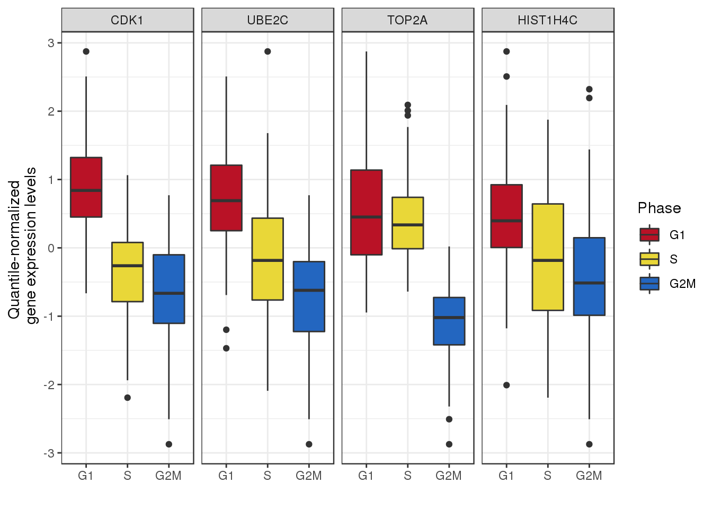
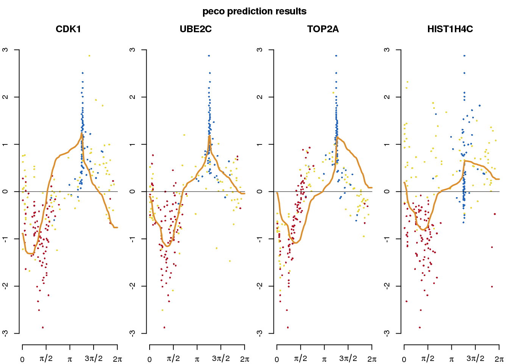
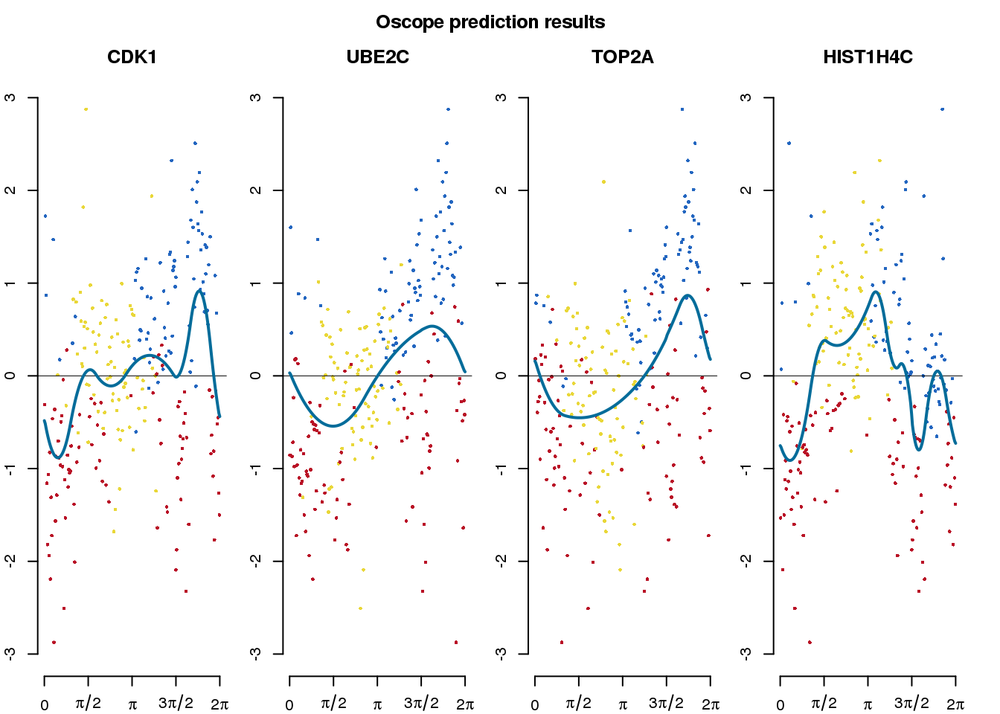
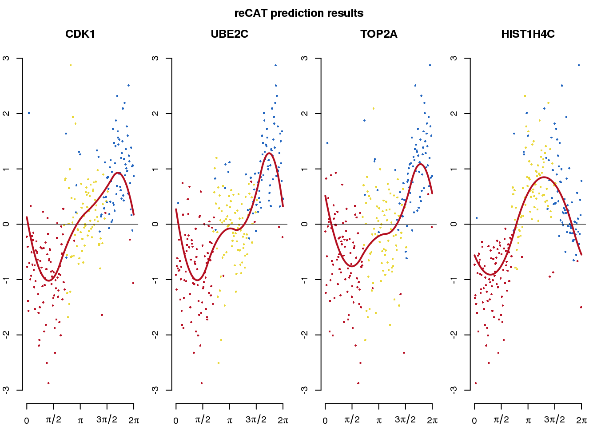

Last updated: 2020-01-26
Checks: 7 0
Knit directory: peco-paper/
This reproducible R Markdown analysis was created with workflowr (version 1.6.0). The Checks tab describes the reproducibility checks that were applied when the results were created. The Past versions tab lists the development history.
Great! Since the R Markdown file has been committed to the Git repository, you know the exact version of the code that produced these results.
Great job! The global environment was empty. Objects defined in the global environment can affect the analysis in your R Markdown file in unknown ways. For reproduciblity it’s best to always run the code in an empty environment.
The command set.seed(20190814) was run prior to running the code in the R Markdown file. Setting a seed ensures that any results that rely on randomness, e.g. subsampling or permutations, are reproducible.
Great job! Recording the operating system, R version, and package versions is critical for reproducibility.
Nice! There were no cached chunks for this analysis, so you can be confident that you successfully produced the results during this run.
Great job! Using relative paths to the files within your workflowr project makes it easier to run your code on other machines.
Great! You are using Git for version control. Tracking code development and connecting the code version to the results is critical for reproducibility. The version displayed above was the version of the Git repository at the time these results were generated.
Note that you need to be careful to ensure that all relevant files for the analysis have been committed to Git prior to generating the results (you can use wflow_publish or wflow_git_commit). workflowr only checks the R Markdown file, but you know if there are other scripts or data files that it depends on. Below is the status of the Git repository when the results were generated:
Ignored files:
Ignored: .Rhistory
Ignored: .Rproj.user/
Ignored: analysis/figure/
Untracked files:
Untracked: analysis/npreg_trendfilter_quantile.Rmd
Untracked: data/HumanLengESC.rds
Untracked: data/data_training_test/
Untracked: data/eset-filtered.rds
Untracked: data/fit.quant.rds
Untracked: data/fit.trend.perm.lowmiss.rds
Untracked: data/fit_diff_cyclone.rds
Untracked: data/fit_diff_oscope.rds
Untracked: data/fit_diff_peco.rds
Untracked: data/fit_diff_recat.rds
Untracked: data/fit_diff_seurat.rds
Untracked: data/intensity.rds
Untracked: data/leng2015_data.rds
Untracked: data/leng_fucci_oscope_29genes.rda
Untracked: data/leng_fucci_recat.rda
Untracked: data/leng_geneinfo.txt
Untracked: data/log2cpm.quant.rds
Untracked: data/macosko-2015.rds
Untracked: data/nmeth.3549-S2.xlsx
Untracked: data/ourdata_cyclone_NA18511.rds
Untracked: data/ourdata_cyclone_NA18855.rds
Untracked: data/ourdata_cyclone_NA18870.rds
Untracked: data/ourdata_cyclone_NA19098.rds
Untracked: data/ourdata_cyclone_NA19101.rds
Untracked: data/ourdata_cyclone_NA19160.rds
Untracked: data/ourdata_oscope_366genes.rda
Untracked: data/ourdata_peco_NA18511_top005genes.rds
Untracked: data/ourdata_peco_NA18855_top005genes.rds
Untracked: data/ourdata_peco_NA18870_top005genes.rds
Untracked: data/ourdata_peco_NA19098_top005genes.rds
Untracked: data/ourdata_peco_NA19101_top005genes.rds
Untracked: data/ourdata_peco_NA19160_top005genes.rds
Untracked: data/ourdata_phase_cyclone.rds
Untracked: data/ourdata_phase_seurat.rds
Untracked: data/ourdata_recat.rda
Untracked: data/sce-filtered.rds
Unstaged changes:
Modified: analysis/index.Rmd
Modified: code/run_seurat.R
Note that any generated files, e.g. HTML, png, CSS, etc., are not included in this status report because it is ok for generated content to have uncommitted changes.
These are the previous versions of the R Markdown and HTML files. If you’ve configured a remote Git repository (see ?wflow_git_remote), click on the hyperlinks in the table below to view them.
| File | Version | Author | Date | Message |
|---|---|---|---|---|
| Rmd | cfbce75 | jhsiao999 | 2020-01-26 | Leng et al. 2015 data results |
In Leng et al. 2015, FUCCI reporters were used to sort single-cell samples (Human Embryonic Stem Cells) into G1, S and G2M phases. The single-cell samples in each phase were then captured separated in 3 Fluidigm C1 plates.
We used this datat to assess the ability of peco to predict cell cycle phase against a “ground truth”. Specifically, we compared the performance of peco with Oscope and reCAT in predicting continuous cell cycle phase. We also compared the reuslts of Seurat and Oscope with the Leng et al. gating-based classification and our PAM-based discrete classification.
Load packages
library(SingleCellExperiment)
library(peco)
library(yarrr)
library(tidyverse)
library(SingleCellExperiment)
library(peco)Getting data
# ------ getting data
sce <- readRDS("data/leng2015_data.rds")
pdata <- data.frame(colData(sce))
fdata <- data.frame(rowData(sce))
counts <- assay(sce)
sce_fucci <- sce[,pdata$cell_state != "H1"]
# compute quantile-normalized gene expression levels
sce_fucci <- data_transform_quantile(sce_fucci)computing on 2 corescounts_fucci <- assay(sce_fucci, "counts")
cpm_quantNormed_fucci <- assay(sce_fucci, "cpm_quantNormed")
pdata_fucci <- data.frame(colData(sce_fucci))
pdata_fucci$cell_state <- droplevels(pdata_fucci$cell_state)
pdata_fucci$cell_state <- factor(pdata_fucci$cell_state,
levels = c("G1", "S", "G2"),
labels = c("G1", "S", "G2M"))# load training data
library(peco)
data("sce_top101genes")
data("training_human")
# Use top 4 genes for HIST1H4E was deprecated in genome build hg38
gene_symbols <- c("CDK1", "UBE2C", "TOP2A", "HIST1H4C")
gene_ensg <- c("ENSG00000170312","ENSG00000175063",
"ENSG00000131747", "ENSG00000197061")
# use top 101 genes to predict
training_fun = training_human$cellcycle_function[gene_ensg]
training_sigma = training_human$sigma[gene_ensg,]
# use get_trend_estimateds=TRUE to estimate cyclic expression levels of
# the four genes in Leng et al. 2015 data
out_peco <- cycle_npreg_outsample(
Y_test=sce_fucci[rownames(sce_fucci) %in% gene_symbols],
funs_est=training_fun,
sigma_est=training_sigma,
method.trend="trendfilter",
ncores=4,
get_trend_estimates=TRUE)computing on 4 coressubdata_plot <- do.call(rbind, lapply(1:4, function(g) {
gindex <- which(rownames(out_peco$Y_reordered) == gene_symbols[g])
gexp <- out_peco$Y_reordered[gindex,]
data.frame(gexp=gexp, gene=gene_symbols[g], cell_state=pdata_fucci$cell_state)
}))
ggplot(subdata_plot, aes(x=cell_state, y = gexp, fill=cell_state)) +
geom_boxplot() + facet_wrap(~gene, ncol=4) +
ylab("Quantile-normalized \n gene expression levels") + xlab("") +
scale_fill_manual(values=as.character(yarrr::piratepal("espresso")[3:1]),
name="Phase") + theme_bw()
par(mfrow=c(1,4), mar=c(2,2,2,1), oma = c(0,0,2,0))
all.equal(colnames(out_peco$Y_reordered), rownames(pdata_fucci))[1] "246 string mismatches"cell_state_col <- data.frame(cell_state = pdata_fucci$cell_state[match(colnames(out_peco$Y_reordered),
rownames(pdata_fucci))],
sample_id = pdata_fucci$sample_id[match(colnames(out_peco$Y_reordered),
rownames(pdata_fucci))])
cell_state_col$cols <- as.character(yarrr::piratepal("espresso")[3:1])[cell_state_col$cell_state]
for (g in 1:4) {
if (g>1) { ylab <- ""} else { ylab <- "Quantile-normalized expression value"}
# if (i==1) { xlab <- "Predicted phase"} else { xlab <- "Inferred phase"}
gindex <- which(rownames(out_peco$Y_reordered) == gene_symbols[g])
plot(x= out_peco$cell_times_reordered,
y = out_peco$Y_reordered[gindex,], pch = 16, cex=.5, ylab=ylab,
xlab="Predicted phase", col = cell_state_col$cols,
main = gene_symbols[g], axes=F, ylim=c(-3,3))
abline(h=0, lwd=.5)
lines(x = seq(0, 2*pi, length.out=200),
y = out_peco$funs_reordered[[g]](seq(0, 2*pi, length.out=200)),
col=wesanderson::wes_palette("FantasticFox1")[1], lty=1, lwd=2)
axis(2); axis(1,at=c(0,pi/2, pi, 3*pi/2, 2*pi),
labels=c(0,expression(pi/2), expression(pi), expression(3*pi/2),
expression(2*pi)))
}
title("peco prediction results", outer = TRUE, line = .5)
We applied Oscope to estimate cell cycle ordering across the 888 single-cell samples. The analysis used the 29 genes that were identified as oscillating cell cycle genes in Leng et al. 2015 (doi:10.1038/nmeth.3549). The data file was downloaed from nmeth.3549-S2.xlsx.
# Oscope
library(openxlsx)
oscope29genes <- unlist(read.xlsx("data/nmeth.3549-S2.xlsx", colNames = F))
# run Oscope on FUCCI cells ------------------------------
library(Oscope)
Sizes <- MedianNorm(counts_fucci)
DataNorm <- GetNormalizedMat(counts_fucci, Sizes)
DataNorm_sub <- DataNorm[which(rownames(DataNorm) %in% oscope29genes),]
DataInput <- NormForSine(DataNorm_sub)
SineRes <- OscopeSine(DataInput, parallel=F)
KMResUse <- list(cluster1=oscope29genes)
ENIRes <- OscopeENI(KMRes = KMResUse, Data = DataInput,
NCThre = 100, parallel=T)
save(DataInput,
KMResUse, ENIRes, fits_leng_oscope, pdata_fucci,
file = "data/leng_fucci_oscope_29genes.rda")# load pre-computed results,
load("data/leng_fucci_oscope_29genes.rda")
# lot predicted results
gene_symbols <- c("CDK1", "UBE2C", "TOP2A", "HIST1H4C")
gene_ensg <- c("ENSG00000170312","ENSG00000175063",
"ENSG00000131747", "ENSG00000197061")
phase_pred <- seq(0, 2*pi, length.out= length(ENIRes$cluster1))
names(phase_pred) <- colnames(DataInput)[ENIRes[["cluster1"]]]
fits_leng_oscope <- lapply(1:4, function(g) {
gindex <- which(rownames(cpm_quantNormed_fucci) == gene_symbols[g])
fit_g <- data.frame(
gexp=cpm_quantNormed_fucci[gindex, match(names(phase_pred), colnames(cpm_quantNormed_fucci))],
phase=shift_origin((-phase_pred+2*pi), origin = pi/2))
fit_g <- fit_g[order(fit_g$phase),]
fit_trend <- fit_trendfilter_generic(fit_g$gexp)
fit_g$trend.yy <- fit_trend$trend.yy
fun_g <- approxfun(x=as.numeric(fit_g$phase),
y=as.numeric(fit_g$trend.yy), rule=2)
fit_out <- list(fit_g=fit_g,
pve = fit_trend$pve,
fun_g = fun_g)
return(fit_out)
})Fold 1 ... Fold 2 ... Fold 3 ... Fold 4 ... Fold 5 ...
Fold 1 ... Fold 2 ... Fold 3 ... Fold 4 ... Fold 5 ...
Fold 1 ... Fold 2 ... Fold 3 ... Fold 4 ... Fold 5 ...
Fold 1 ... Fold 2 ... Fold 3 ... Fold 4 ... Fold 5 ... names(fits_leng_oscope) <- gene_symbols
all.equal(rownames(fits_leng_oscope[[1]]$fit_g), rownames(pdata_fucci))[1] "247 string mismatches"cell_state_oscope_col <-
data.frame(cell_state = pdata_fucci$cell_state[match(rownames(fits_leng_oscope[[1]]$fit_g),
rownames(pdata_fucci))],
sample_id = rownames(fits_leng_oscope[[1]]$fit_g) )
cell_state_oscope_col$cols <-
as.character(yarrr::piratepal("espresso")[3:1])[cell_state_oscope_col$cell_state]
par(mfrow=c(1,4), mar=c(2,2,2,1), oma = c(0,0,2,1))
for (g in 1:4) {
if (g>1) { ylab <- ""} else { ylab <- "Normalized log2CPM"}
# if (i==1) { xlab <- "Predicted phase"} else { xlab <- "Inferred phase"}
res_g <- fits_leng_oscope[[g]]
plot(x= res_g$fit_g$phase,
y = res_g$fit_g$gexp, pch = 16, cex=.5, ylab=ylab,
xlab="Predicted phase", col=cell_state_oscope_col$cols,
main = names(fits_leng_oscope)[g], axes=F, ylim=c(-3,3))
abline(h=0, lwd=.5)
lines(x = seq(0, 2*pi, length.out=200),
y = res_g$fun_g(seq(0, 2*pi, length.out=200)),
col = wesanderson::wes_palette("Darjeeling2")[2], lty=1, lwd=2)
axis(2); axis(1,at=c(0,pi/2, pi, 3*pi/2, 2*pi),
labels=c(0,expression(pi/2), expression(pi), expression(3*pi/2),
expression(2*pi)))
}
title("Oscope prediction results", outer = TRUE, line = .5)
We applied reCAT to estimate cell cycle ordering across the 888 single-cell samples. The analysis used all the 11,040 genes.
To run recAT, please clone the reCAT GitHUb repository and then cd to the directory.
git clone https://github.com/tinglab/reCAT
cd "reCAT/R"
# recat
input <- t(cpm_quantNormed_fucci)
input <- input[sample(1:nrow(input)),]
source("get_test_exp.R")
test_exp <- get_test_exp(t(input))
source("get_ordIndex.R")
res_ord <- get_ordIndex(test_exp, 10)
ordIndex <- res_ord$ordIndex
save(test_exp, res_ord, ordIndex, "data/leng_fucci_recat.rda")# load pre-computed results
load("data/leng_fucci_recat.rda")
sample_ordered <- rownames(test_exp)[ordIndex]
phase_pred <- seq(0, 2*pi, length.out= length(ordIndex))
names(phase_pred) <- sample_ordered
fits_recat <- lapply(1:4, function(g) {
gindex <- which(rownames(cpm_quantNormed_fucci) == gene_symbols[g])
fit_g <- data.frame(
gexp=cpm_quantNormed_fucci[gindex, match(sample_ordered, colnames(cpm_quantNormed_fucci))],
phase=(-phase_pred)+2*pi )
fit_g <- fit_g[order(fit_g$phase),]
fit_trend <- fit_trendfilter_generic(fit_g$gexp, polyorder = 2)
fit_g$trend.yy <- fit_trend$trend.yy
# fit_g$pve <- fit$pve
fun_g <- approxfun(x=as.numeric(fit_g$phase),
y=as.numeric(fit_g$trend.yy), rule=2)
fit_out <- list(fit_g=fit_g,
# pve = fit$pve,
fun_g = fun_g)
return(fit_out)
})Fold 1 ... Fold 2 ... Fold 3 ... Fold 4 ... Fold 5 ...
Fold 1 ... Fold 2 ... Fold 3 ... Fold 4 ... Fold 5 ...
Fold 1 ... Fold 2 ... Fold 3 ... Fold 4 ... Fold 5 ...
Fold 1 ... Fold 2 ... Fold 3 ... Fold 4 ... Fold 5 ... names(fits_recat) <- gene_symbols
all.equal(rownames(fits_recat[[1]]$fit_g), rownames(pdata_fucci))[1] "246 string mismatches"cell_state_recat_col <-
data.frame(cell_state = pdata_fucci$cell_state[match(rownames(fits_recat[[1]]$fit_g),
rownames(pdata_fucci))],
sample_id = rownames(fits_recat[[1]]$fit_g) )
cell_state_recat_col$cols <-
as.character(yarrr::piratepal("espresso")[3:1])[cell_state_recat_col$cell_state]
par(mfrow=c(1,4), mar=c(2,2,2,1), oma = c(0,0,2,0) )
for (g in 1:4) {
if (g>1) { ylab <- ""} else { ylab <- "Quantile-normalized expression value"}
res_g <- fits_recat[[g]]
plot(x= res_g$fit_g$phase,
y = res_g$fit_g$gexp, pch = 16, cex=.5, ylab=ylab,
xlab="Predicted phase", col = cell_state_recat_col$cols,
main = names(fits_recat)[g], axes=F, ylim=c(-3,3))
abline(h=0, lwd=.5)
lines(x = seq(0, 2*pi, length.out=200),
y = res_g$fun_g(seq(0, 2*pi, length.out=200)),
col=wesanderson::wes_palette("FantasticFox1")[5], lty=1, lwd=2)
axis(2); axis(1,at=c(0,pi/2, pi, 3*pi/2, 2*pi),
labels=c(0,expression(pi/2), expression(pi), expression(3*pi/2),
expression(2*pi)))
}
title("reCAT prediction results", outer = TRUE, line = .5)
library(Seurat)
Attaching package: 'Seurat'The following object is masked from 'package:SummarizedExperiment':
Assayscc.genes <- readLines(con = "data//regev_lab_cell_cycle_genes.txt")
obj <- CreateSeuratObject(counts = counts_fucci)
obj <- NormalizeData(obj)
obj <- FindVariableFeatures(obj, selection.method = "vst")
obj <- ScaleData(obj, features = rownames(obj))Centering and scaling data matrixobj <- CellCycleScoring(obj, s.features = cc.genes[1:43],
g2m.features = cc.genes[44:97], set.ident = TRUE)
out_seurat <- obj[[]]
all.equal(rownames(out_seurat), colnames(counts_fucci))[1] TRUEout_seurat <- out_seurat[match(colnames(counts_fucci), rownames(out_seurat)),]
out_seurat$Phase <- factor(out_seurat$Phase,
levels = c("G1", "S", "G2M"))
out_seurat$gates <- pdata_fucci$cell_state[match(rownames(out_seurat),
rownames(pdata_fucci))]
table(out_seurat$gates, out_seurat$Phase)
G1 S G2M
G1 10 28 53
S 20 60 0
G2M 11 5 60library(scran)
hs.pairs <- readRDS(system.file("exdata", "human_cycle_markers.rds", package="scran"))
## get ENSG ID
# library(biomaRt)
# mart <- useMart(biomart = "ensembl", dataset = "hsapiens_gene_ensembl")
# geneinfo <- getBM(attributes = c("hgnc_symbol", "ensembl_gene_id"),
# filters = "hgnc_symbol",
# values = rownames(cpm_quantNormed_fucci), bmHeader = T, mart = mart)
#write.table(geneinfo, file = "data/leng_geneinfo.txt"))
geneinfo <- read.table("data/leng_geneinfo.txt")
indata <- which(geneinfo$ensg %in% unlist(hs.pairs))
geneinfo_indata <- geneinfo[indata,]
Y_cyclone <- cpm_quantNormed_fucci[rownames(cpm_quantNormed_fucci) %in% as.character(geneinfo_indata$symbol),]
rownames(Y_cyclone) <- geneinfo_indata$ensg[match(rownames(Y_cyclone),
geneinfo_indata$symbol)]
out_cyclone <- cyclone(Y_cyclone, pairs = hs.pairs,
gene.names=rownames(Y_cyclone),
iter=1000, min.iter=100, min.pairs=50,
BPPARAM=SerialParam(), verbose=T, subset.row=NULL)Number of G1 pairs: 21666Number of S pairs: 26446Number of G2M pairs: 18738names(out_cyclone$phases) <- colnames(Y_cyclone)
all.equal(names(out_cyclone$phases), colnames(cpm_quantNormed_fucci))[1] TRUEall.equal(names(out_cyclone$phases), rownames(pdata_fucci))[1] TRUEout_cyclone$cell_state <- pdata_fucci$cell_state[match(names(out_cyclone$phases),
rownames(pdata_fucci))]
out_cyclone$phases <- factor(out_cyclone$phases,
levels = c("G1", "S", "G2M"))
table(pdata_fucci$cell_state, out_cyclone$phases)
G1 S G2M
G1 91 0 0
S 0 78 2
G2M 0 0 76sessionInfo()R version 3.5.1 (2018-07-02)
Platform: x86_64-pc-linux-gnu (64-bit)
Running under: Scientific Linux 7.4 (Nitrogen)
Matrix products: default
BLAS/LAPACK: /software/openblas-0.2.19-el7-x86_64/lib/libopenblas_haswellp-r0.2.19.so
locale:
[1] LC_CTYPE=en_US.UTF-8 LC_NUMERIC=C
[3] LC_TIME=en_US.UTF-8 LC_COLLATE=en_US.UTF-8
[5] LC_MONETARY=en_US.UTF-8 LC_MESSAGES=en_US.UTF-8
[7] LC_PAPER=en_US.UTF-8 LC_NAME=C
[9] LC_ADDRESS=C LC_TELEPHONE=C
[11] LC_MEASUREMENT=en_US.UTF-8 LC_IDENTIFICATION=C
attached base packages:
[1] parallel stats4 stats graphics grDevices utils datasets
[8] methods base
other attached packages:
[1] scran_1.10.2 Seurat_3.1.0
[3] forcats_0.3.0 stringr_1.3.1
[5] dplyr_0.8.0.1 purrr_0.3.2
[7] readr_1.3.1 tidyr_0.8.3
[9] tibble_2.1.1 ggplot2_3.2.1
[11] tidyverse_1.2.1 yarrr_0.1.5
[13] circlize_0.4.8 BayesFactor_0.9.12-4.2
[15] Matrix_1.2-17 coda_0.19-2
[17] jpeg_0.1-8 peco_0.99.10
[19] SingleCellExperiment_1.4.1 SummarizedExperiment_1.12.0
[21] DelayedArray_0.8.0 BiocParallel_1.16.0
[23] matrixStats_0.55.0 Biobase_2.42.0
[25] GenomicRanges_1.34.0 GenomeInfoDb_1.18.1
[27] IRanges_2.16.0 S4Vectors_0.20.1
[29] BiocGenerics_0.28.0
loaded via a namespace (and not attached):
[1] reticulate_1.10 R.utils_2.7.0
[3] tidyselect_0.2.5 htmlwidgets_1.3
[5] grid_3.5.1 Rtsne_0.15
[7] munsell_0.5.0 codetools_0.2-15
[9] ica_1.0-2 statmod_1.4.30
[11] future_1.14.0 withr_2.1.2
[13] colorspace_1.3-2 knitr_1.20
[15] rstudioapi_0.10 ROCR_1.0-7
[17] gbRd_0.4-11 listenv_0.7.0
[19] Rdpack_0.11-0 labeling_0.3
[21] git2r_0.26.1 GenomeInfoDbData_1.2.0
[23] rhdf5_2.26.2 rprojroot_1.3-2
[25] generics_0.0.2 circular_0.4-93
[27] R6_2.4.0 doParallel_1.0.14
[29] ggbeeswarm_0.6.0 rsvd_1.0.0
[31] conicfit_1.0.4 locfit_1.5-9.1
[33] bitops_1.0-6 assertthat_0.2.1
[35] promises_1.0.1 SDMTools_1.1-221.1
[37] scales_1.0.0 beeswarm_0.2.3
[39] gtable_0.2.0 npsurv_0.4-0
[41] globals_0.12.4 workflowr_1.6.0
[43] rlang_0.4.0 MatrixModels_0.4-1
[45] GlobalOptions_0.1.0 splines_3.5.1
[47] lazyeval_0.2.1 genlasso_1.4
[49] broom_0.5.1 yaml_2.2.0
[51] reshape2_1.4.3 modelr_0.1.2
[53] backports_1.1.2 httpuv_1.4.5
[55] tools_3.5.1 gplots_3.0.1
[57] RColorBrewer_1.1-2 dynamicTreeCut_1.63-1
[59] ggridges_0.5.1 Rcpp_1.0.3
[61] plyr_1.8.4 zlibbioc_1.28.0
[63] RCurl_1.95-4.11 pbapply_1.3-4
[65] viridis_0.5.1 cowplot_0.9.4
[67] zoo_1.8-4 haven_1.1.2
[69] ggrepel_0.8.0 cluster_2.0.7-1
[71] fs_1.3.1 magrittr_1.5
[73] data.table_1.12.0 lmtest_0.9-36
[75] RANN_2.6.1 mvtnorm_1.0-11
[77] whisker_0.3-2 fitdistrplus_1.0-14
[79] hms_0.4.2 lsei_1.2-0
[81] evaluate_0.12 readxl_1.1.0
[83] gridExtra_2.3 shape_1.4.4
[85] compiler_3.5.1 scater_1.10.1
[87] KernSmooth_2.23-15 crayon_1.3.4
[89] R.oo_1.22.0 htmltools_0.3.6
[91] later_0.7.5 RcppParallel_4.4.3
[93] lubridate_1.7.4 MASS_7.3-51.1
[95] boot_1.3-20 wesanderson_0.3.6
[97] cli_1.1.0 R.methodsS3_1.7.1
[99] gdata_2.18.0 metap_1.1
[101] igraph_1.2.2 pkgconfig_2.0.3
[103] plotly_4.8.0 xml2_1.2.0
[105] foreach_1.4.4 vipor_0.4.5
[107] XVector_0.22.0 bibtex_0.4.2
[109] rvest_0.3.2 digest_0.6.20
[111] sctransform_0.2.0 RcppAnnoy_0.0.11
[113] pracma_2.2.9 tsne_0.1-3
[115] rmarkdown_1.10 cellranger_1.1.0
[117] leiden_0.3.1 edgeR_3.24.0
[119] uwot_0.1.3 geigen_2.3
[121] DelayedMatrixStats_1.4.0 gtools_3.8.1
[123] nlme_3.1-137 jsonlite_1.6
[125] Rhdf5lib_1.4.3 BiocNeighbors_1.0.0
[127] limma_3.38.3 viridisLite_0.3.0
[129] pillar_1.3.1 lattice_0.20-38
[131] httr_1.3.1 survival_2.43-1
[133] glue_1.3.0 png_0.1-7
[135] iterators_1.0.12 stringi_1.2.4
[137] HDF5Array_1.10.1 caTools_1.17.1.1
[139] irlba_2.3.3 future.apply_1.3.0
[141] ape_5.2
sessionInfo()R version 3.5.1 (2018-07-02)
Platform: x86_64-pc-linux-gnu (64-bit)
Running under: Scientific Linux 7.4 (Nitrogen)
Matrix products: default
BLAS/LAPACK: /software/openblas-0.2.19-el7-x86_64/lib/libopenblas_haswellp-r0.2.19.so
locale:
[1] LC_CTYPE=en_US.UTF-8 LC_NUMERIC=C
[3] LC_TIME=en_US.UTF-8 LC_COLLATE=en_US.UTF-8
[5] LC_MONETARY=en_US.UTF-8 LC_MESSAGES=en_US.UTF-8
[7] LC_PAPER=en_US.UTF-8 LC_NAME=C
[9] LC_ADDRESS=C LC_TELEPHONE=C
[11] LC_MEASUREMENT=en_US.UTF-8 LC_IDENTIFICATION=C
attached base packages:
[1] parallel stats4 stats graphics grDevices utils datasets
[8] methods base
other attached packages:
[1] scran_1.10.2 Seurat_3.1.0
[3] forcats_0.3.0 stringr_1.3.1
[5] dplyr_0.8.0.1 purrr_0.3.2
[7] readr_1.3.1 tidyr_0.8.3
[9] tibble_2.1.1 ggplot2_3.2.1
[11] tidyverse_1.2.1 yarrr_0.1.5
[13] circlize_0.4.8 BayesFactor_0.9.12-4.2
[15] Matrix_1.2-17 coda_0.19-2
[17] jpeg_0.1-8 peco_0.99.10
[19] SingleCellExperiment_1.4.1 SummarizedExperiment_1.12.0
[21] DelayedArray_0.8.0 BiocParallel_1.16.0
[23] matrixStats_0.55.0 Biobase_2.42.0
[25] GenomicRanges_1.34.0 GenomeInfoDb_1.18.1
[27] IRanges_2.16.0 S4Vectors_0.20.1
[29] BiocGenerics_0.28.0
loaded via a namespace (and not attached):
[1] reticulate_1.10 R.utils_2.7.0
[3] tidyselect_0.2.5 htmlwidgets_1.3
[5] grid_3.5.1 Rtsne_0.15
[7] munsell_0.5.0 codetools_0.2-15
[9] ica_1.0-2 statmod_1.4.30
[11] future_1.14.0 withr_2.1.2
[13] colorspace_1.3-2 knitr_1.20
[15] rstudioapi_0.10 ROCR_1.0-7
[17] gbRd_0.4-11 listenv_0.7.0
[19] Rdpack_0.11-0 labeling_0.3
[21] git2r_0.26.1 GenomeInfoDbData_1.2.0
[23] rhdf5_2.26.2 rprojroot_1.3-2
[25] generics_0.0.2 circular_0.4-93
[27] R6_2.4.0 doParallel_1.0.14
[29] ggbeeswarm_0.6.0 rsvd_1.0.0
[31] conicfit_1.0.4 locfit_1.5-9.1
[33] bitops_1.0-6 assertthat_0.2.1
[35] promises_1.0.1 SDMTools_1.1-221.1
[37] scales_1.0.0 beeswarm_0.2.3
[39] gtable_0.2.0 npsurv_0.4-0
[41] globals_0.12.4 workflowr_1.6.0
[43] rlang_0.4.0 MatrixModels_0.4-1
[45] GlobalOptions_0.1.0 splines_3.5.1
[47] lazyeval_0.2.1 genlasso_1.4
[49] broom_0.5.1 yaml_2.2.0
[51] reshape2_1.4.3 modelr_0.1.2
[53] backports_1.1.2 httpuv_1.4.5
[55] tools_3.5.1 gplots_3.0.1
[57] RColorBrewer_1.1-2 dynamicTreeCut_1.63-1
[59] ggridges_0.5.1 Rcpp_1.0.3
[61] plyr_1.8.4 zlibbioc_1.28.0
[63] RCurl_1.95-4.11 pbapply_1.3-4
[65] viridis_0.5.1 cowplot_0.9.4
[67] zoo_1.8-4 haven_1.1.2
[69] ggrepel_0.8.0 cluster_2.0.7-1
[71] fs_1.3.1 magrittr_1.5
[73] data.table_1.12.0 lmtest_0.9-36
[75] RANN_2.6.1 mvtnorm_1.0-11
[77] whisker_0.3-2 fitdistrplus_1.0-14
[79] hms_0.4.2 lsei_1.2-0
[81] evaluate_0.12 readxl_1.1.0
[83] gridExtra_2.3 shape_1.4.4
[85] compiler_3.5.1 scater_1.10.1
[87] KernSmooth_2.23-15 crayon_1.3.4
[89] R.oo_1.22.0 htmltools_0.3.6
[91] later_0.7.5 RcppParallel_4.4.3
[93] lubridate_1.7.4 MASS_7.3-51.1
[95] boot_1.3-20 wesanderson_0.3.6
[97] cli_1.1.0 R.methodsS3_1.7.1
[99] gdata_2.18.0 metap_1.1
[101] igraph_1.2.2 pkgconfig_2.0.3
[103] plotly_4.8.0 xml2_1.2.0
[105] foreach_1.4.4 vipor_0.4.5
[107] XVector_0.22.0 bibtex_0.4.2
[109] rvest_0.3.2 digest_0.6.20
[111] sctransform_0.2.0 RcppAnnoy_0.0.11
[113] pracma_2.2.9 tsne_0.1-3
[115] rmarkdown_1.10 cellranger_1.1.0
[117] leiden_0.3.1 edgeR_3.24.0
[119] uwot_0.1.3 geigen_2.3
[121] DelayedMatrixStats_1.4.0 gtools_3.8.1
[123] nlme_3.1-137 jsonlite_1.6
[125] Rhdf5lib_1.4.3 BiocNeighbors_1.0.0
[127] limma_3.38.3 viridisLite_0.3.0
[129] pillar_1.3.1 lattice_0.20-38
[131] httr_1.3.1 survival_2.43-1
[133] glue_1.3.0 png_0.1-7
[135] iterators_1.0.12 stringi_1.2.4
[137] HDF5Array_1.10.1 caTools_1.17.1.1
[139] irlba_2.3.3 future.apply_1.3.0
[141] ape_5.2